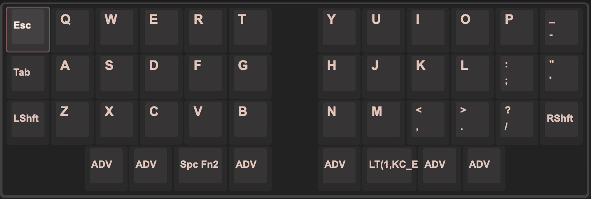
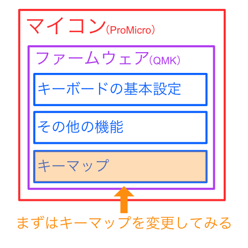

1. 基本
普通のキーボードは、キーボード側で設定できる機能はあまりありません。
自作キーボードでは、キーボードの機能をカスタマイズできるので、通常よりキー数を減らせたり、自分好みのキーマップを楽しむことができます。
そんな機能を実現しているファームウェアについて説明します。
※わかりやすさのためにおおざっぱな説明があります。気になる表現などありましたらご連絡ください。
知っておきたいこと
マイコン
- キースイッチが押された時に、どのキーが入力されたかをPCに伝える必要があります
- このような処理をするのに頭脳となるコンピュータが必要になります
- 多くの自作キーボードではProMicroというマイコン（マイクロコンピュータ）を使用しています
- ↓これです

ファームウェア
- マイコンを動かすためには、アプリのようなものを入れてあげなくてはいけません
- マイコン用のアプリのことをファームウェアと呼びます
- 多くの自作キーボードではQMKというオープンソースのファームウェアを使用しています
- Daily Craft Keyboardのキーボード付属の「ProMicro」には「各キーボード用に設定されたQMK」が入った状態になっています
- 各キーボードごとに設定が違うので、他のキーボードに挿しても正常に動きません
- QMKについては、公式ドキュメント を参考にしてください。
- 有志の方の翻訳のおかげで、かなりの部分が日本語で読めます。
キーマップ
- キーマップとは、どのキーを押したらどのキーが入力されるか、という設定のことです
- 上記の「各キーボード用に設定されたQMK」には、そのキーボードのデフォルトキーマップが入っています
- このままでは最初に設定されているキーマップでしか使用できません
- キーマップを変更することで、例えばスペースキーを割り当てていたキーをエンターキーに変更したりすることができます
- デフォルトのキーマップは例でしかないので、自分に合ったキーマップを作っていきましょう！ 
まとめるとこんな感じです

基本がわかったところで、まずはキーマップを変更してみましょう。
最終更新 January 1, 0001